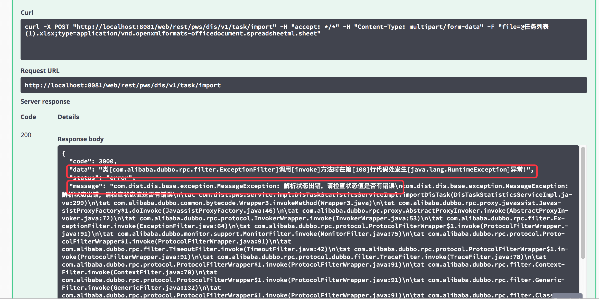
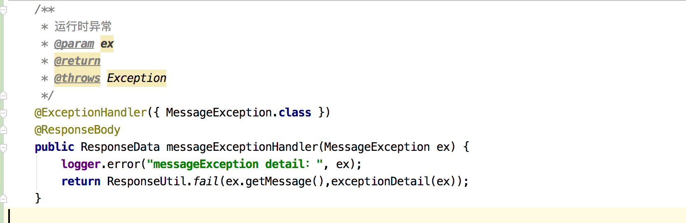
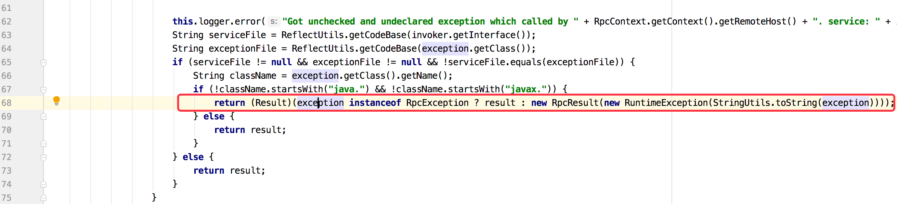
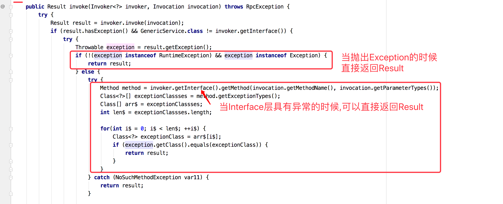
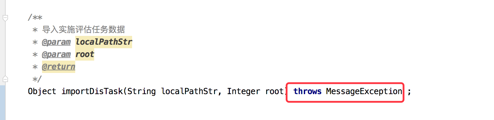
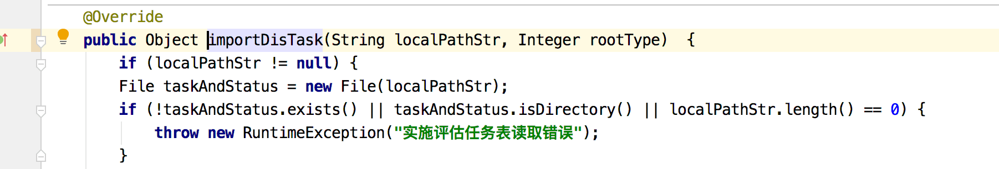
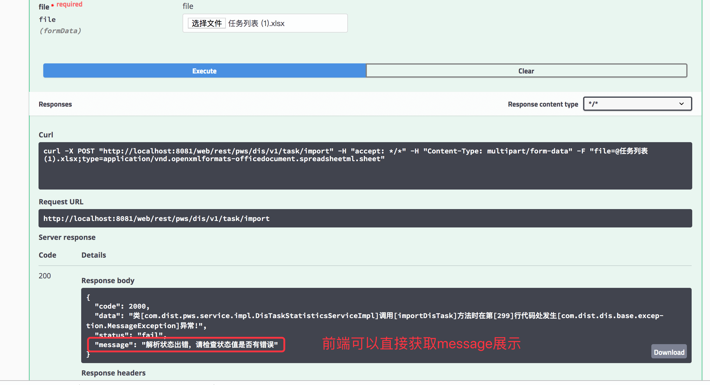

DubboRpc的ExceptionFilter过滤器
在使用dubbo进行接口调用的时候,在接口抛出异常的时候会在ExceptionFilter最终抛出异常。
Dubbo filter下的异常处理
场景
现有的异常处理下,很多时候我们总是会遇到下面的这个异常
com.alibaba.dubbo.rpc.filter.ExceptionFilter invoke xxx

那就存在一个问题
我明明自己定义了自定义异常(继承自RuntimeException),在全局异常处理也做了对应的处理

但是并没有被处理.
分析
查看dubboFileter的ExceptionFilter发现:
 抛出异常的代码在68行,查看上下文分析在什么时候会抛出这个异常

解决
那么我们想直接返回异常的message给到前端的时候,根据源码可以制定下面两种方式
1、使用非运行时异常Exception
检查型异常Exception按照常规的方式,在每一层(domain、seviceImpl、interface层)抛出Exception
但是要注意的是:在使用非运行时异常的时候,代码检查工具sonar推荐不要直接Throw Exception,而是抛出明确的异常来提升代码的可读性.
2、使用RunTimeException,但是只在接口层抛出即可
如下:
接口层

实现层,在实现层不需要专门抛出

效果:

December 27, 2020 ∙
dubbo